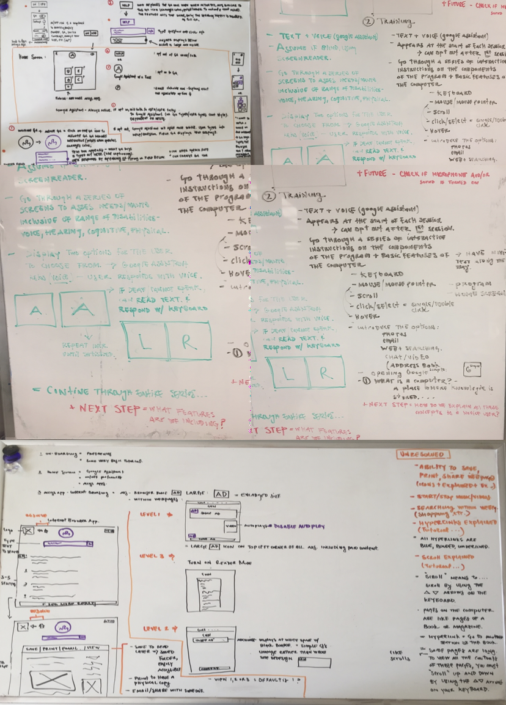
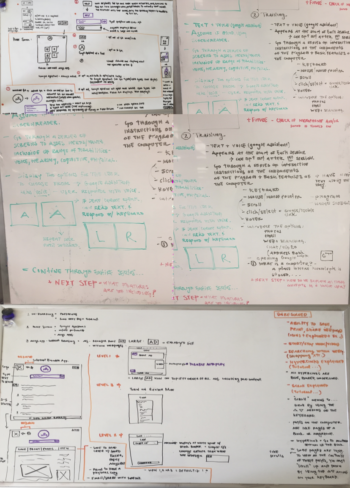
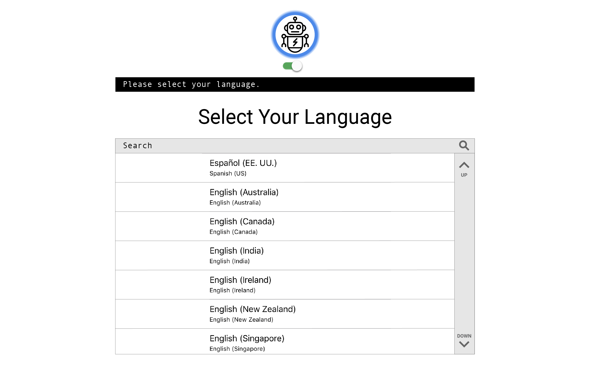
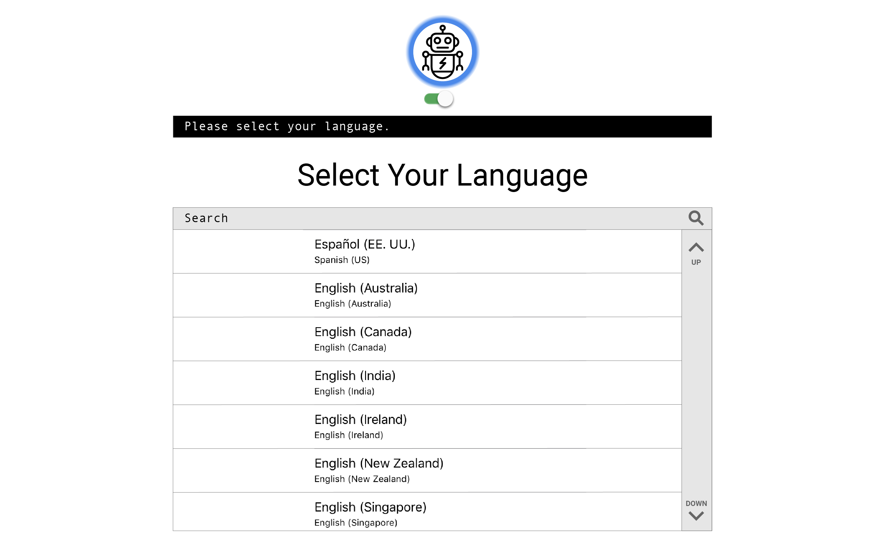
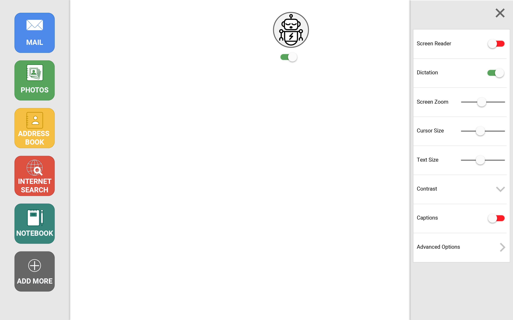
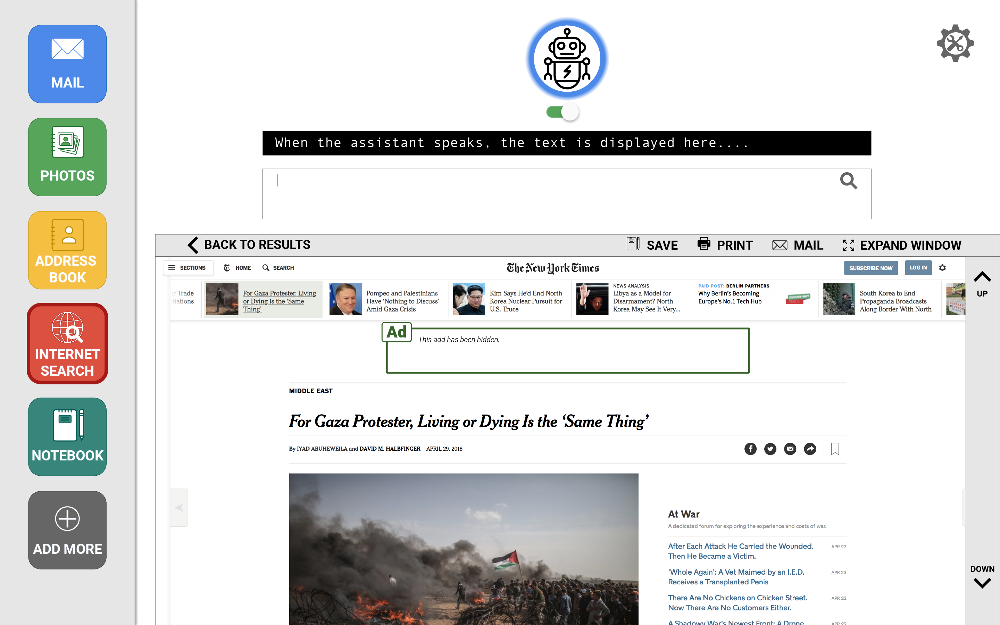

Simple Go: Growing from Easy to Advanced Internet Use
- Duration: Spring 2018 - Team Project
- Course: Designing for Human Disability and Aging
- Tools and Methods: Brainstorming, Pen and Paper sketching, User Interviews, Lo-fidelity prototypes, Hi-fidelity design, Concept Analysis
Design Problem
The problem that we strive to address through this project is to create an easy to use program that allows individuals to learn common metaphors of the computer and be well versed with using the computer and the internet with very little training. We ultimately want to produce a simple, usable, and acceptable solution for our older, less experienced, and unconfident users.
Target Users
For our project, our target users are people who are just starting out with the computer, afraid of using the computer, or finding the computer complicated to use.
Concept Design
Brainstorming
All of us firstly got together to understand and research about the various features and accessibility measures that we can include in our project. Common metaphors like mouse, scroll bar, window, tab etc., stood out in our discussions and we wanted to help our target users understand the computer in a different way than usual and still get accustomed to it.
 

Initial Mockups
Intially we named our concept as Google Simple as all the applications that we present to our target users are underlying Google applications just represented in a format that is easy understandable and discernable by our target users. Based on this ideation, we came up with a home screen with only top 6 commonly used applications. Each application brings in a notch of simplicity and the incorporation of a virtual assistant which would help our target users perform operations.
Final Concept Design: Simple Go
Simple Go is a simple interface designed to support those who require a little more assistance using the computer. The application incorporates common metaphors from real life for minimal training and a more intuitive experience using the computer and internet. Virtual assistant Dot helps guide users to complete tasks like sending an email, searching the internet, viewing and organize photos, maintaining an address book, and more
Onboarding
Users can begin by selecting their preferred settings, including language, volume, text size, color contrast, virtual assistant options, and more. Dot will read out all their options to them based on the preferred settings. The users can choose to state their selection or use their mouse or finger to click on their desired preference. Users also have the capability to have a proficient computer user help set them up. As the users become more independent, they can ask the person to give them more control of their Simple Go.
 


Dashboard
The dashboard experience of Simple Go is very minimalistic and gives the user an enriching experience. The dashboard contains 4 elements to it-
- Simple Apps : Commonly used apps are displayed in a dock on the left side of the screen. Simple Go comes with five simple apps. As the user become more proficient, Dot may recommend apps to them or they can add the apps themselves from the Simple Go app store
- Dot, the virtual assistant : Dot is the virtual assistant to help users use Simple Go efficiently.
- Setting Panel : A number of settings can be easily accessed from the main screen. These include screen zoom, volume control, captions, etc. As the user becomes more proficient with Simple Go, they may choose to add more settings to this panel.
- Helpful Training : Helpful reminders will pop up after a few seconds if the user leaves the mouse over any clickable area of the screen.
Dot, the Virtual Assistant
The virtual assistant Dot studies how the users interact with Simple Go to better assist them when they need it. Dot also will suggest options the users may not be aware of for a more enjoyable experience. To interact with Dot, users can clicg on Dot’s face to wake her/him up and speak. Alternatively, they can also type in the text field below Dot and Dot will wake up automatically. The virtual assistant Dot stays asleep until she/he is either activated or she/he detects that the user is struggling to find something in the application and requires help to continue.
Incase the user does not like the avatar that the virtual assistant adorns, they can choose to modify how Dot looks and speaks. Dot can be a robot, person, animal, cartoon character, or anything else that the user wishes.
Using the toggle switch below Dot’s face turns the virtual assistant on and off. When off, Dot becomes a search button.
Browsing the Internet
Searching the internet efficiently is an acquired skill. Knowing which words to use to attain the desired search result is a skill regular computer users typically develop over many years. Simple Go offsets the learning curve by offering a simplified searching experience.
The virtual assistant Dot helps refine search results by providing suggestions and recommendations. Only the top 4 results are displayed at a time, but the users can also simply click on “SHOW MORE RESULTS” to see more results. The search results can be viewed in any way the user wants them to be -
- Reader mode: Only the website body text, images, videos, and sound are presented on the screen. With Reader Mode turned on, webpages are displayed as simplified versions of their originals.
- Hidden ads: Webpages are not altered; however, all ads are hidden and auto-playing sound and video is turned off.
- Visible and identified ads: This mode most resembles the standard internet browsing experience. Ads are not hidden, but are easily identifiable by an Ad icon and green border. 